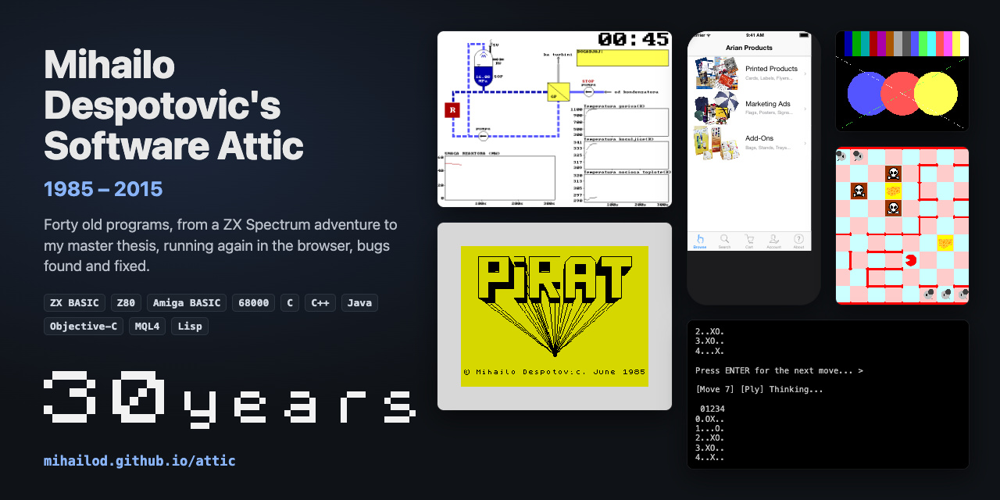

(For my post-2015 work see my GitHub.)
Historical programs I wrote for fun, school, interviews, and certifications since my childhood, brought back to life to run in any browser. Some are unchanged, others contain fixes for bugs discovered during modernization.
All programs originally written in Java unless stated otherwise.
“Beware of bugs in the above code; I have only proved it correct, not tried it.”
A number of producers and consumers share one buffer, waiting when it is full or empty. Watch them take turns, then break it with if instead of while, or notify() instead of notifyAll().
A Log4j 2 appender that sends an application's log events to AWS CloudWatch Logs, in batches flushed every few seconds, to a new log stream each time the application starts. Configured in the Log4j configuration like any other appender. Made during my tenure at Virtual Instruments (now Virtana), and open-sourced per company policy.
A catalogue of the science fiction, fantasy and horror books published in Serbo-Croatian in Yugoslavia during the 20th century: 510 titles in 17 categories, from Kentaur and Polaris to X-100 SF, with their cover art, browsable and searchable with no network connection. Each book links to Google, Goodreads and Wikipedia, and, for collectors, to the used-book sites of Serbia, Croatia, Slovenia and Bosnia and Herzegovina. Made at my startup, MiRteh, it was on the App Store until 2022, and is back there since August 2026.
A web shop iPhone app prototype for Arian GmbH (Austria), from the time of my startup, MiRteh, meant to lead to a big project that was later cancelled. It demoed product discovery (browse and search), a product-dependent configurator, a shopping cart and account management. Here it runs in the browser as it looked on iOS 7, with screenshots of the real app running today, and fixes for prices computed in floats, a cent or a few euros off.
A contract job from the time of my startup, MiRteh, for Davor Urošević, a FOREX trader: a breakout strategy for EUR/USD, begun as a Java program and finished as an Expert Advisor for MetaTrader 4 in MQL4. Here the Expert Advisor runs in a small simulated MetaTrader 4 tester, with fixes for a sell with no breakout and for stopping for good after a weekend, among others.
My notes from learning Common Lisp: exercises from Budimac et al., Henderson’s Functional Programming and SICP, runnable and editable in a small Lisp interpreter written for the page, with notes on my slips.
The classic cellular automaton on a 500 × 350 board that wraps around at the edges.
A hand-built 3D pipeline: rotate a cube or tetrahedron, with hidden surfaces, z-ordering and shading. Based on Michael Abrash's Black Book.
Which pixels to light up to draw a straight line. Drag the ends and watch it work step by step. My version solves the basic direction and gets the other seven by mirroring it.
Every ordering of the letters of a word, built by inserting one letter at a time into every position. Watch it step by step.
Solutions to 28 of the math and programming problems on Project Euler, each runnable with its output and running time.
How many tries it takes to be fairly sure of at least one success, given the chance of each try.
Is it better to pay cash for a house, or take a mortgage and invest the savings? A year-by-year comparison, taxes included.
Generate random primes, test a number by trial division, and encrypt a message with RSA built from scratch.
Add up a big array of numbers on one processor core, then split the work across several and see how much faster it gets.
Add two big matrices row by row, then column by column: the same additions, several times slower, because of the processor’s cache. Then split the rows across all cores.
How many people must be in a room before two probably share a birthday? Only 23. See the curve, and fill rooms with random birthdays to check it.
Dining philosophers around a table share one fork between each pair, and need two to eat. Watch them think, wait and eat, and see the naive way deadlock while mine never does.
Sort line segments on the number line and merge the ones that overlap. My answer to Electronic Arts' 90-minute Java interview problem.
The classic interview data structures, from my C practice: a linked list (2005) and a binary search tree (2011), every operation animated step by step. With fixes for the memory bugs I found, which the printed output never showed.
My version of the Puzzle mode of Sega’s ChuChu Rocket! for the Dreamcast, my favorite game: place arrows so every mouse reaches the cheese and none meets a cat. With my 2003 artwork, sounds, levels and level editor.
Find every dictionary word that can be spelled from a set of letters.
Learn Teeko with move advice from a database of played games. Based on my master thesis “Machine Learning in Strategic Games”. Written for my paper “TeekoTeacher: A Tool for Learning Good Teeko Strategies”, given at the CAPS4 conference in Glasgow, Scotland, UK, and published in its proceedings.
Watch ten sorting algorithms at work, from bubble sort to quick, heap and merge sort.
Play against a computer that searches the whole game tree, with or without alpha-beta pruning. A tiny part of my master thesis “Machine Learning in Strategic Games”.
Parse boolean expressions like #1# AND ( #2# OR NOT #3# ) by recursive descent, and see the parse tree, postfix form and truth table.
The classic falling-blocks game, written as a Java applet. Modernized separately in its own repository, mihailod/jt. ▶ Play it in your browser.
A desktop reader for the Serbian Cafe forums that screen-scraped the site’s pages. The forums closed permanently on December 3, 2024.
Search flights and book seats from two clients sharing one database, with record locking so they can’t double-book. My Sun Certified Java Developer assignment.
Play Teeko against the program of my master thesis “Machine Learning in Strategic Games”, which picks its moves with heuristics, a minimax search and a memory of the positions that won, and learns from every game. Runs here as it did in a Windows console, keeping what it learns in your browser, with the memories of the thesis experiments to load, and fixes for a search that seldom played its best move, a player O that read the memory backwards, a draw offered on every turn, and an opening that could hang. I finished it in California, after moving to the USA in 1998.
A Windows program that shows any file as a wave, drawn from 100 of its bytes. Runs here as it did, menus, toolbar and dialogs included, with fixes for sampling the wrong bytes, writing past the end of an array, and crashing on the smallest files. I wrote it while learning MFC and Visual C++ 5.0 in haste, before emigrating to the USA for my first job there.
Place n queens on a chessboard so that none attacks another, solved by recursion and backtracking. Runs as it did in DOS, in Serbian with an English translation, plus the backtracking step by step. My term project for the Applications of Artificial Intelligence class, during my MSc studies at the University of Belgrade.
A “random” 16-bit number made by iterating the rule A(i) = A(i−1) OR A(i+1) on random bits. Runs as it did in DOS, in Serbian with an English translation, and shows how little randomness comes out. With fixes for a typo that left a bit to chance, among others. My term project for the Statistical Methods in Artificial Intelligence class, during my MSc studies at the University of Belgrade.
A DOS command-line tool that turns a web page into plain text by leaving out everything between < and >. With a fix for a byte that made it stop early.
A DOS utility that saved the EGA/VGA graphics screen to a file and loaded it back by copying its four bit planes straight from video memory. Here the video card is simulated: paint, save, load, and see the planes.
A little DOS graphics demo: the 16 colors of the VGA palette, then a star that flashes at a random spot at every key press. Every screen checked against the original code, with its settings to play with.
My seminar paper for the Numerical Methods class, during my undergraduate studies of Mathematics and Computer Science at the University of Belgrade, Faculty of Mathematics: a boundary value problem solved approximately by Galerkin's method, collocation and least squares, drawn in VGA graphics and compared with the exact solution. Runs as it did in DOS, in Serbian with an English translation, with fixes for a missing term that made every method solve the wrong equation, among others. The menu and the expression evaluator are Vuksan Pejović's libraries.
A catalogue of my books for DOS, “knjige” meaning books: page through them, sort and search by any field, and print one. It comes with my catalogue as I last saved it, in 1998, in Serbian with an English translation, and with fixes for a hang after a search and a sort that lost most of the books, among others.
A simulation of the LOFT (Loss of Fluid Test) L9-3 experiment of 1982 at the Idaho National Laboratory, where a model of a pressurized water reactor lost its feedwater and was not shut down, made with Aleksandar Ćirilović during my undergraduate studies at the University of Belgrade: the reactor's loop animated in VGA graphics for the five minutes of the experiment, its power and temperatures plotted as they go, a click on any part explaining it, and a description in hypertext. Runs as it did in DOS, in Serbian with an English translation, with fixes for graphs that say kelvins for degrees Celsius and a stray word in the description, among others. The hypertext engine is Vuksan Pejović's.
The first Amiga fanzine in the region, which I produced, edited and published in Yugoslavia, in Serbian. Two issues came out, in July and August 1990, both now on the Internet Archive: issue 1 and issue 2. Not a program, but it took many of the same skills.
A text adventure with still pictures for the Commodore Amiga, inspired by The Lord of the Rings, written in Amiga BASIC with some routines in MC68000 assembly. The game itself was sadly not preserved; what is left is my ad for it in the (then) Yugoslav computer magazine Moj Mikro, here with its text in Serbian and English.
A text adventure with still pictures for the ZX Spectrum, written over the summer school break in ZX Spectrum BASIC, with Z80 assembly routines to draw and load the pictures. Nothing of it was preserved; here is its loading screen, recreated from memory, loading as if from tape.